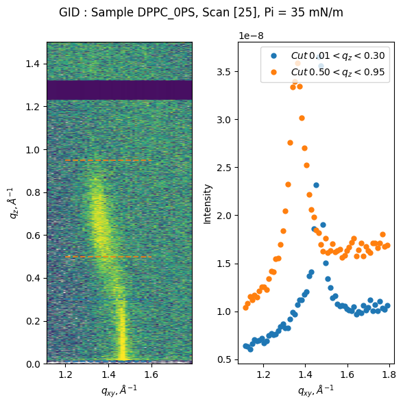

Library setup
[1]:
from ESRF_ID10_SURF.GID import GID
from ESRF_ID10_SURF.XRR import XRR, rebin
import matplotlib.pyplot as plt
import numpy as np
[2]:
FileDir = '/mnt/data/ls3582/id10-surf/20251120/RAW_DATA/DPPC_0PS/DPPC_0PS_0002/'
FileName = 'DPPC_0PS_0002.h5'
file = FileDir+FileName
SavingDir = FileDir.replace('RAW_DATA', 'PROCESSED_DATA') ### optional. If this argument is not given to the class, data will be saved in the folder where the script runs
zgH_ScanN_list = [21] ### optional z-scan for normalization of intensity
refl_ScanN_list = [22,23] ### actual XRR scans
gid_ScanN_list = [25]
(PX0, PY0) = (401, 300)
(dPX, dPY) = (8, 5)
bckg_gap = 3
monitor_name = 'ionch2'
X-ray reflectivity
[3]:
refl = XRR(file, refl_ScanN_list, alpha_i_name='mu', PX0=PX0, PY0=PY0, dPX=dPX, dPY=dPY, bckg_gap=bckg_gap, monitor_name=monitor_name ,saving_dir=SavingDir)
zgH = XRR(file, zgH_ScanN_list, alpha_i_name='zgH', PX0=PX0, PY0=PY0, dPX=dPX, dPY=dPY, bckg_gap=bckg_gap, monitor_name=monitor_name)
### Plot one of the detector images for diagnostic, i.e. reflected beam is out of the signal box, parasitic scattering in the background, etc.
refl.show_detector_image(40)
### Apply all necessary correction in automatic way, sample size im cm and beam size in microns are required for the footprint correction
### z_scan with the same filter as first part of the reflectivity is optional, provides I0 normalization
refl.apply_auto_corrections(sample_size=17, beam_size=19, z_scan=zgH)
Loaded scan #22
Loaded scan #23
Number of points in the scan 124
Loaded scan #21
Number of points in the scan 41
Correcting transmission using double points.
Flux set to 6.4819e+11
I0 replaced.
Loaded scan #22
Loaded scan #23
Number of points in the scan 124
Reloaded and reprocessed data.
Correcting transmission using double points.
Footprint correction completed with beam size = 19 microns and sample size = 17 cm
Reflectivity is fully corrected.

Plot and save reflectivity curve
[4]:
# Plot reflectivity on a new Figure
refl.plot_reflectivity(save=True, fmt='s', markersize=6, color='k', markerfacecolor='w', capsize=3)
# Same, but multiplied by q_z^4
#refl.plot_reflectivity_qz4()
### Save as 3-column .dat file
refl.save_reflectivity()
### Save metadata-rich ORSO-compliant file
refl.save_reflectivity(format='orso', owner='Harvard', creator='John Doe')
Plot saved to /mnt/data/ls3582/id10-surf/20251120/PROCESSED_DATA/DPPC_0PS/DPPC_0PS_0002//DPPC_0PS_XRR_scan_[22 23]_Pi_35_log.png.
Reflectivity saved to: /mnt/data/ls3582/id10-surf/20251120/PROCESSED_DATA/DPPC_0PS/DPPC_0PS_0002//DPPC_0PS_XRR_scan_[22 23]_Pi_35.dat
Reflectivity saved to: /mnt/data/ls3582/id10-surf/20251120/PROCESSED_DATA/DPPC_0PS/DPPC_0PS_0002/DPPC_0PS_XRR_scan_[22 23]_Pi_35.ort

Remap scanning XRR experiment into q-space to explore diffuse scattering
[5]:
refl.produce_Qmap(SDD=820)
refl.plot_Qmap()
Starting q-space mapping.
2D map calculated. Processing time 0.633 sec
/home/egor/PycharmProjects/ESRF_ID10_SURF/src/ESRF_ID10_SURF/XRR/XRR.py:530: RuntimeWarning: divide by zero encountered in log10
ax0.pcolormesh(self.Qx_map, self.Qz_map, np.log10(self.Smap2D), cmap='viridis', vmin=2, vmax=10,
/home/egor/PycharmProjects/ESRF_ID10_SURF/src/ESRF_ID10_SURF/XRR/XRR.py:530: RuntimeWarning: invalid value encountered in log10
ax0.pcolormesh(self.Qx_map, self.Qz_map, np.log10(self.Smap2D), cmap='viridis', vmin=2, vmax=10,
[5]:
(<Figure size 600x600 with 1 Axes>,
<Axes: xlabel='$q_x, \\AA^{-1}$', ylabel='$q_z, \\AA^{-1}$'>)

Grazing Incidence Diffraction
[6]:
gid = GID(file, gid_ScanN_list, PX0=50, PPD=198.5, mythen_gap=90, alpha_i_name='mu', I0=2e12, saving_dir=SavingDir)
gid.plot_quick_analysis(save=True)
Start loading data.
Loading scan #25
Loaded scan #25
Loading completed. Reading time 0.004 sec
Start processing 2D data.
Processing completed. Processing time 0.001 sec
Saving standard GID plot.
/home/egor/PycharmProjects/ESRF_ID10_SURF/src/ESRF_ID10_SURF/GID/GID.py:333: RuntimeWarning: divide by zero encountered in log10
im = ax0.imshow(np.log10(np.rot90(self.data_gap)), aspect='equal', vmin=_vmin, vmax=_vmax,
[6]:
(<Figure size 600x600 with 2 Axes>,
array([<Axes: xlabel='$q_{xy}, \\AA^{-1}$', ylabel='$q_{z}, \\AA^{-1}$'>,
<Axes: xlabel='$q_{xy}, \\AA^{-1}$', ylabel='Intensity'>],
dtype=object))

Making q-space cuts
[7]:
fig, [ax0, ax1] = plt.subplots(1,2, figsize=(8,4), layout='tight')
gid.plot_qxy_cut(0, 0.4, ax=ax0, marker='s', alpha=0.8) ## plot cut
gid.plot_qxy_cut(0.5, 1, ax=ax0, alpha=0.8)
ax0.legend(loc = 'lower right')
gid.save_qxy_cut(0, 0.4) ## save the same cut as txt file
gid.save_qxy_cut(0.5, 1)
gid.plot_qz_cut(1.4, 1.5, ax=ax1, alpha=0.2)
gid.plot_qz_cut(1.25, 1.4, ax=ax1, alpha=0.2)
ax1.set_xlim(0, 1.25)
gid.save_qz_cut(1.4, 1.5)
gid.save_qz_cut(1.25, 1.4)
/home/egor/PycharmProjects/ESRF_ID10_SURF/src/ESRF_ID10_SURF/GID/GID.py:393: UserWarning: marker is redundantly defined by the 'marker' keyword argument and the fmt string "o" (-> marker='o'). The keyword argument will take precedence.
ax.plot(x, y, 'o', markersize=5, label=label, **kwargs)
GID cut saved as: /mnt/data/ls3582/id10-surf/20251120/PROCESSED_DATA/DPPC_0PS/DPPC_0PS_0002//GID_DPPC_0PS_scan_[25]_qxy_cut_0_0.4_A.dat
GID cut saved as: /mnt/data/ls3582/id10-surf/20251120/PROCESSED_DATA/DPPC_0PS/DPPC_0PS_0002//GID_DPPC_0PS_scan_[25]_qxy_cut_0.5_1_A.dat
GID cut saved as: /mnt/data/ls3582/id10-surf/20251120/PROCESSED_DATA/DPPC_0PS/DPPC_0PS_0002//GID_DPPC_0PS_scan_[25]_qz_cut_1.4_1.5_A.dat
GID cut saved as: /mnt/data/ls3582/id10-surf/20251120/PROCESSED_DATA/DPPC_0PS/DPPC_0PS_0002//GID_DPPC_0PS_scan_[25]_qz_cut_1.25_1.4_A.dat

Plot only 2D graph to be able to modifiy image
[8]:
fig, ax = plt.subplots(layout='tight')
gid.plot_2D_image(ax=ax, cmap='jet') ### this function takes kwargs for imshow
ax.set_xlim((1.12,1.75))
ax.set_ylim(0, 1.2)
[8]:
(0.0, 1.2)

An example of rebinning data to smooth/reduce number of points
[9]:
qz, qz_cut = gid.get_qz_cut(1.25, 1.4)
new_qz, new_qz_cut, new_qz_e = rebin(qz[200:1200], qz_cut[200:1200],np.ones(len(qz[200:1200])), number_of_bins=40)
plt.plot(qz, qz_cut, 'o', alpha=0.5)
plt.plot(new_qz, new_qz_cut, 'o', alpha=0.8)
[9]:
[<matplotlib.lines.Line2D at 0x78064c172cf0>]

Example of quick data fitting
It is possible to modify peak shape and background
Peak shapes:
Gaussian
Lorentzian
Voigt
Pseudo-voigt ### Backgrounds:
Linear
Constant
[10]:
gid.analyze_peak(*gid.get_qz_cut(1.25, 1.4), limits=(0.1, 1.2), model='gaussian', background='constant', filename_prefix=f'qz_fit_result_pi_{gid.Pi}', save=True)
Fitting gaussian profile...
Graph saved to /mnt/data/ls3582/id10-surf/20251120/PROCESSED_DATA/DPPC_0PS/DPPC_0PS_0002//qz_fit_result_pi_35_DPPC_0PS.png
Fit parameters saved to /mnt/data/ls3582/id10-surf/20251120/PROCESSED_DATA/DPPC_0PS/DPPC_0PS_0002//qz_fit_result_pi_35_DPPC_0PS.txt
[10]:
Fit Result
Model: (Model(gaussian, prefix='peak_') + Model(constant, prefix='bg_'))
| fitting method | leastsq |
| # function evals | 41 |
| # data points | 1099 |
| # variables | 4 |
| chi-square | 7.9789e-18 |
| reduced chi-square | 7.2867e-21 |
| Akaike info crit. | -50954.6989 |
| Bayesian info crit. | -50934.6903 |
| R-squared | 0.99202106 |
| name | value | standard error | relative error | initial value | min | max | vary | expression |
|---|---|---|---|---|---|---|---|---|
| peak_amplitude | 1.6351e-10 | 4.2536e-12 | (2.60%) | 6.521827259204003e-10 | -inf | inf | True | |
| peak_center | 0.67541340 | 0.00239408 | (0.35%) | 0.6678458712078683 | -inf | inf | True | |
| peak_sigma | 0.14364533 | 0.00316242 | (2.20%) | 0.21967123158247365 | 0.00000000 | inf | True | |
| bg_c | 4.2462e-10 | 4.6408e-12 | (1.09%) | 2.5602301218488093e-10 | -inf | inf | True | |
| peak_fwhm | 0.33825890 | 0.00744694 | (2.20%) | 0.5172862095550407 | -inf | inf | False | 2.3548200*peak_sigma |
| peak_height | 4.5412e-10 | 7.3369e-12 | (1.62%) | 1.1844212590999683e-09 | -inf | inf | False | 0.3989423*peak_amplitude/max(1e-15, peak_sigma) |
| Parameter1 | Parameter 2 | Correlation |
|---|---|---|
| peak_amplitude | bg_c | -0.8320 |
| peak_amplitude | peak_sigma | +0.7861 |
| peak_sigma | bg_c | -0.6534 |

[11]:
gid.analyze_peak(*gid.get_qxy_cut(0, 0.25), filename_prefix=f'qxy_fit_result_pi_{gid.Pi}',model='voigt', save=True)
Fitting voigt profile...
Graph saved to /mnt/data/ls3582/id10-surf/20251120/PROCESSED_DATA/DPPC_0PS/DPPC_0PS_0002//qxy_fit_result_pi_35_DPPC_0PS.png
Fit parameters saved to /mnt/data/ls3582/id10-surf/20251120/PROCESSED_DATA/DPPC_0PS/DPPC_0PS_0002//qxy_fit_result_pi_35_DPPC_0PS.txt
[11]:
Fit Result
Model: (Model(voigt, prefix='peak_') + Model(linear, prefix='bg_'))
| fitting method | leastsq |
| # function evals | 73 |
| # data points | 61 |
| # variables | 5 |
| chi-square | 5.3092e-17 |
| reduced chi-square | 9.4807e-19 |
| Akaike info crit. | -2526.70813 |
| Bayesian info crit. | -2516.15376 |
| R-squared | 0.96397875 |
| name | value | standard error | relative error | initial value | min | max | vary | expression |
|---|---|---|---|---|---|---|---|---|
| peak_amplitude | 1.1181e-09 | 4.0833e-11 | (3.65%) | 1.3921267485513022e-09 | -inf | inf | True | |
| peak_center | 1.46732756 | 5.2709e-04 | (0.04%) | 1.4630889709210735 | -inf | inf | True | |
| peak_sigma | 0.00891700 | 4.0213e-04 | (4.51%) | 0.007315307623194406 | 0.00000000 | inf | True | |
| bg_slope | 4.9982e-09 | 6.2989e-10 | (12.60%) | 5.281351872044777e-09 | -inf | inf | True | |
| bg_intercept | 5.1777e-10 | 9.2271e-10 | (178.21%) | -5.179515587578305e-10 | -inf | inf | True | |
| peak_gamma | 0.00891700 | 4.0213e-04 | (4.51%) | 0.007315307623194406 | -inf | inf | False | peak_sigma |
| peak_fwhm | 0.03211272 | 0.00144818 | (4.51%) | 0.026344548858876313 | -inf | inf | False | 1.0692*peak_gamma+sqrt(0.8664*peak_gamma**2+5.545083*peak_sigma**2) |
| peak_height | 2.6170e-08 | 8.7017e-10 | (3.33%) | 3.9718052479715894e-08 | -inf | inf | False | (peak_amplitude/(max(1e-15, peak_sigma*sqrt(2*pi))))*real(wofz((1j*peak_gamma)/(max(1e-15, peak_sigma*sqrt(2))))) |
| Parameter1 | Parameter 2 | Correlation |
|---|---|---|
| bg_slope | bg_intercept | -0.9889 |
| peak_amplitude | peak_sigma | +0.6867 |

Saving a 2D image to h5 file to be explored with pyMCA and to .dat file
[12]:
gid.save_image_h5() ## This is a preferred format
2D image saved to /mnt/data/ls3582/id10-surf/20251120/PROCESSED_DATA/DPPC_0PS/DPPC_0PS_0002//GID_DPPC_0PS_scan_[25]_2D.h5
[13]:
gid.save_image_dat() ## This is not recommended as the resulting file is big and difficult to work with
2D image saved to /mnt/data/ls3582/id10-surf/20251120/PROCESSED_DATA/DPPC_0PS/DPPC_0PS_0002//GID_DPPC_0PS_scan_[25]_2D.dat